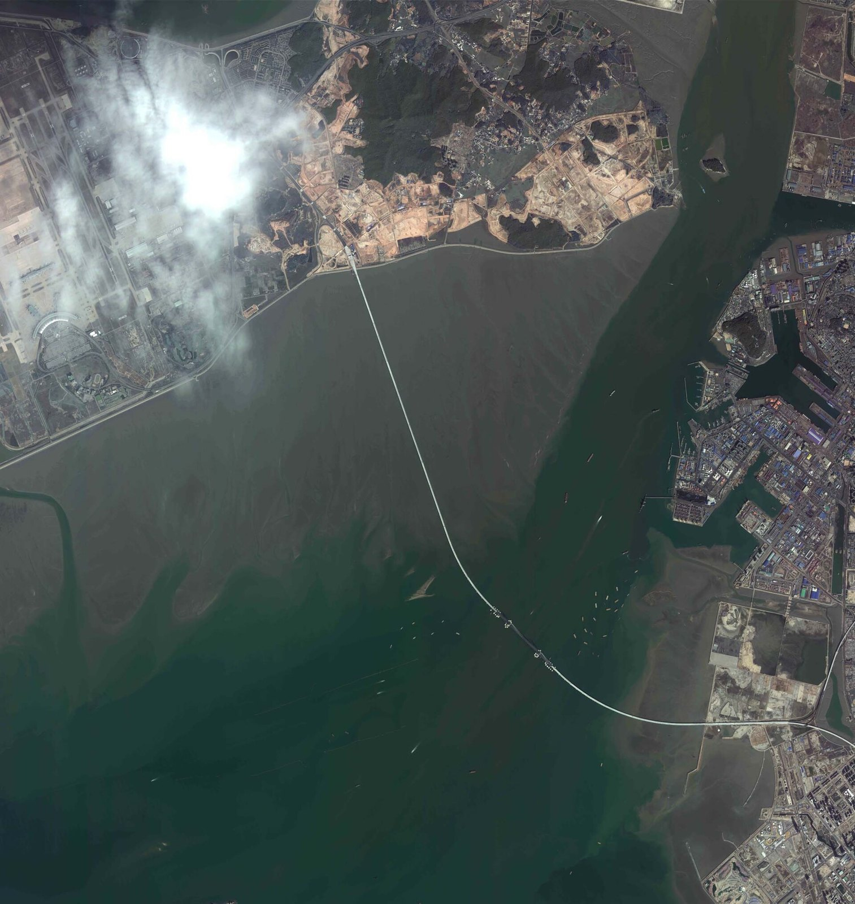
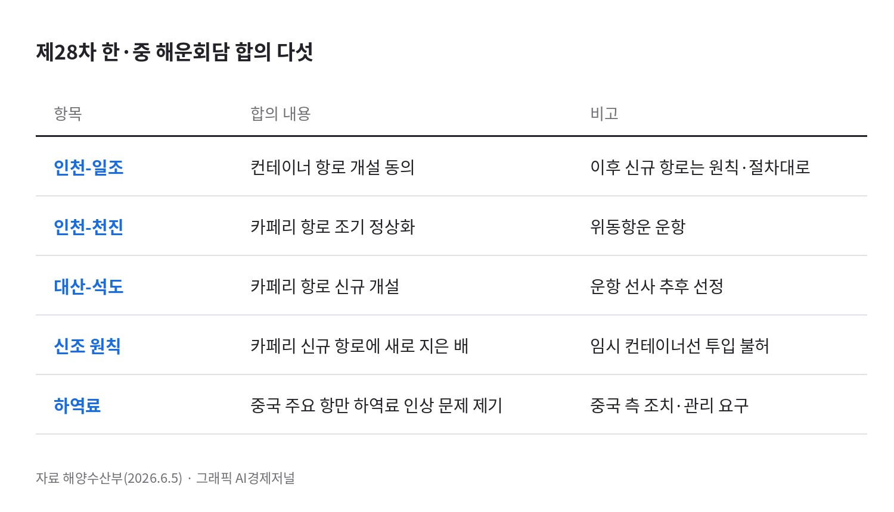
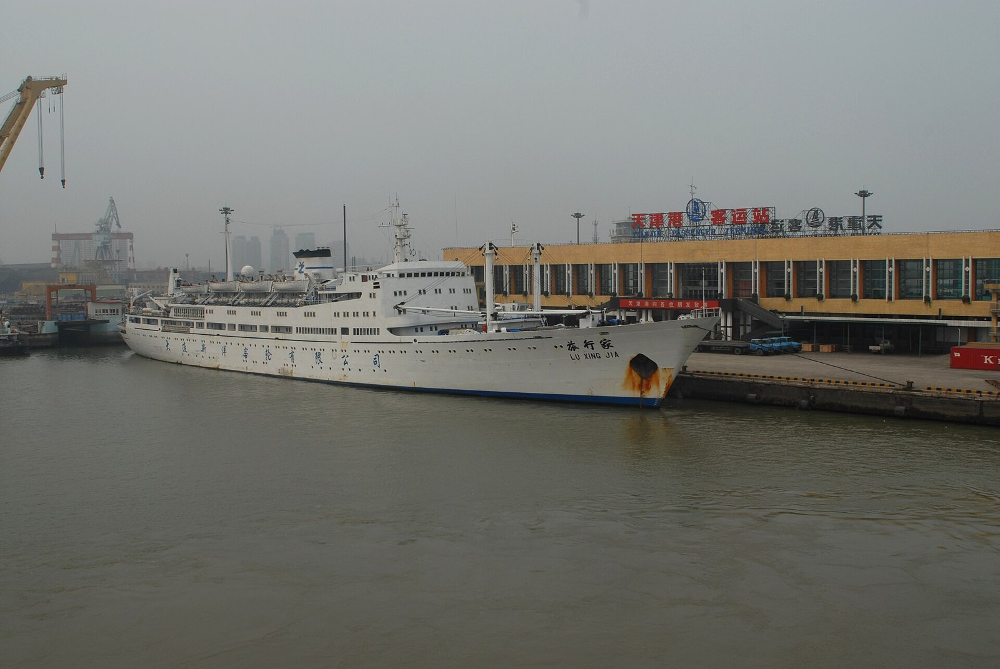
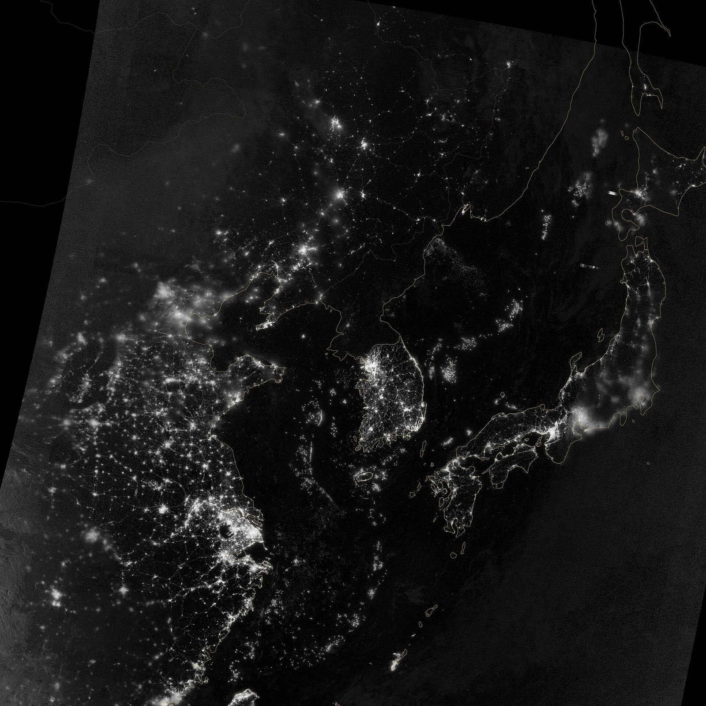
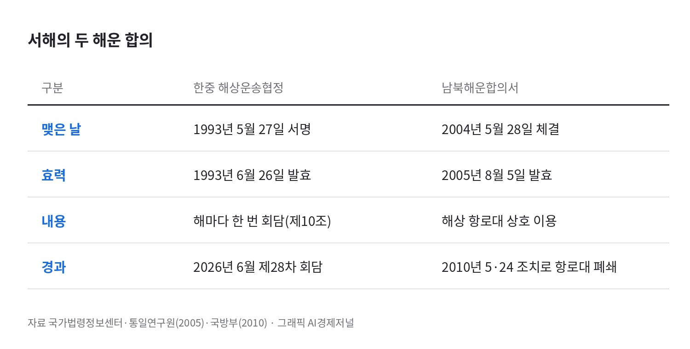

[해운협정] 한중 해운회담 28차 합의, 인천·대산 서해 뱃길 셋 연다
인천-일조 컨테이너 4분기 취항 목표, 인천-천진 카페리 정상화
남북해운합의서 항로대는 2010년 5·24 조치로 폐쇄
AI경제저널=김갑봉 기자 | 한국과 중국 해운당국이 지난 6월 인천에서 연 제28차 해운회담에서 서해 뱃길 셋을 열거나 되살리기로 합의했다. 인천-일조 컨테이너 항로는 개설, 인천-천진 카페리 항로는 조기 정상화, 대산-석도 카페리 항로는 신규 개설이 합의 내용이다. 인천-천진 항로는 2020년 2월 운항이 멈춘 항로다.
한중 사이 새 뱃길은 두 나라 정부가 회담에서 개설 여부를 정한다. 회담 결과에 인천항과 충남 서해안의 물동량과 카페리 여객이 걸려 있다. 인천 앞바다 북쪽에는 남북해운합의서가 정한 해상 항로대가 따로 있다.
1993년 협정, 해마다 한 번 여는 회담

한중 해운회담의 근거는 1993년 5월 27일 서울에서 서명한 「해상운송에 관한 협정」이다. 협정은 같은 해 6월 26일 발효했다. 처음 3년 동안 유효하고, 그 뒤로는 1년씩 자동으로 연장된다.
제10조는 양국 해운당국 대표가 해마다 한 번 모여 협정 이행에서 생기는 문제를 논의하도록 정한다. 한쪽이 요청하면 특별회의도 연다.
제3조는 한쪽 나라 선박이 상대국의 개방 항구를 드나들며 두 나라 사이, 또는 제3국과의 여객·화물 운송에 종사할 수 있게 한다. 같은 조는 정기선 교역과 여객 운송에서 "호혜평등의 원칙"을 실현하도록 서로 협력한다고 적는다.
협정 본문에는 항로를 몇 개 열지가 없다. 그 몫은 해마다 열리는 회담이 맡는다. 제28차 회담은 6월 4~5일 인천 송도에서 열렸다. 수석대표는 김혜정 해양수산부 해운물류국장과 중국 교통운수부 수운국 부국장이다. 대표단은 한국 13명, 중국 12명이다.
인천-일조 컨테이너, 4분기 취항 계획
해수부에 따르면 양국은 중국 측이 이미 신청한 인천-일조 컨테이너 항로 개설에 동의했다. 이후 신청되는 신규 항로는 기존 해운회담에서 합의한 원칙과 절차에 따라 개설 여부를 검토한다.

중국 산둥성 교통운수청은 7월 20일 이 항로가 두 나라 정부의 심사를 정식으로 통과했다고 발표했다. 운항은 산둥원양해운그룹이 맡고, 2026년 4분기 취항이 목표다. 일조는 산둥성 남동부의 항구도시로, 중국어 발음으로는 르자오다.
한중 항로는 우리나라 카페리 운송의 중심이다. 이경한 한남대 교수와 한국해양수산개발원 이종필·고동훈 연구진의 2021년 논문에 그 비중이 나온다. 2018년 기준 한중 항로의 몫은 전국 카페리 여객의 약 77.5%, 화물의 약 84.6%다.
연구진에 따르면 우리나라 카페리 항로는 1970년 한일 노선에서 출발해 21개로 늘었다. 늘어난 항로 가운데 10개가 인천·평택과 중국을 잇는다. 연구진이 꼽은 인천항 국제여객부두의 시급한 과제는 세관 인력 확충과 상시 통관, 카페리 화물 전용 배후단지다.
천인호 멈춘 지 6년, 인천-천진

인천-천진 항로의 정기 운항은 2020년 2월 끊겼다. 진천국제객화항운의 천인호가 선령 30년에 이르러 운항을 멈췄다. 양국은 이번 회담에서 조기 정상화에 동의했다. 운항은 두 나라가 균등한 지분을 가진 위동항운이 맡는다.
해수부는 이번 회담을 두고 "인천-천진 항로 정상화 등 한·중 해운협력의 새로운 이정표를 세운 자리"라고 밝혔다. 카페리 신규 항로에는 새로 지은 배를 넣는 것이 원칙이다. 신조를 전제로 임시 컨테이너선을 먼저 넣는 일은 허용하지 않는다.
해수부는 임시 컨테이너선으로 이익만 챙긴 뒤 신조 투입을 번복하는 일을 막는 조치라고 설명한다. 승객은 늘고 있다. 인천항만공사 집계로 올해 1~9월 인천항 한중 카페리 여객은 36만7329명이다. 지난해 같은 기간보다 18.8% 많다.
대산-석도 개설, 하역료는 숙제
대산-석도 카페리 항로는 새 항로다. 해수부가 밝힌 개설 이유는 충청권에 국제 항로가 없다는 점이다. 운항 선사는 추후 선정한다. 중국 쪽 기항지 석도는 인천과 이미 카페리로 이어져 있다.
김재철 등 인천대 연구진의 2022년 논문은 2017~2021년 한중·한일 카페리 16개 항로의 효율성을 비교한다. 기본 모형에서는 평택-일조, 인천-진황도, 인천-석도 항로의 효율이 가장 높다. 석도와 일조, 두 항구가 이번 회담 합의에 함께 들어 있다.
분석 모형을 바꾸면 순위도 바뀐다. 투입과 산출의 여유분까지 따지는 모형에서는 인천-연운항, 인천-청도, 평택-일조 항로가 5년 내내 효율 1로 나온다. 평택-일조 항로는 두 모형 모두에서 상위에 든다.
비용 문제도 의제다. 한국 측은 중국 주요 항만의 과도한 하역료 인상 문제를 제기했고, 중국 측에 적절한 조치와 관리를 요구했다. 하역료는 항만에서 화물을 배에 싣고 내리는 데 드는 요금이다.
남북해운합의서, 5·24로 닫힌 항로대

남북 사이에도 해운 합의가 있다. 통일연구원 보고서에 따르면 남북해운합의서는 2004년 5월 28일 체결됐다. 합의서와 부속합의서는 2005년 8월 5일 효력을 냈다. 남북이 9개 경협합의서의 발효 문본을 교환한 날이다. 이 합의서는 남북 선박이 정해진 해상 항로대를 따라 상대 항구를 오가게 한다.
2010년 5월 24일 정부는 북한 선박의 우리 해역 운항을 전면 불허한다고 밝혔다. 장광일 당시 국방부 정책실장은 남북해운합의서에 따른 해상 항로대를 폐쇄하는 방식이라고 설명했다.

한중 협정 제10조에 따라 두 나라 해운당국은 해마다 다시 만난다. 제28차 합의문에서 대산-석도 운항 선사는 추후 선정 몫이다. 산둥성이 내건 인천-일조 컨테이너 항로의 취항 목표는 올해 4분기다. 같은 서해에서 남북 항로대는 2010년 5·24 조치 때 폐쇄됐다.
참고문헌
- 김재철·김유나·최영서·김현진·여기태, 「코로나 19 전후 기간의 한중 및 한일카페리 항로 효율성 비교에 관한 연구- 카페리 화물을 중심으로」, 『해운물류연구』 38(3), 한국해운물류학회, 2022.9, 543-564쪽, https://www.dbpia.co.kr/journal/articleDetail?nodeId=NODE11238767
- 이경한·이종필·고동훈, 「인천항 국제여객부두 관리체계 개선에 관한 연구」, 『한국항만경제학회지』 37(3), 한국항만경제학회, 2021, 35-53쪽, https://doi.org/10.38121/kpea.2021.09.37.3.35
- 이철수 외, 『남북한 통합을 위한 법제도 인프라 확충방안』, 경제·인문사회연구회 협동연구총서 05-08-04, 통일연구원, 2005.12, https://repo.kinu.or.kr/bitstream/2015.oak/863/1/0000676021.pdf
- 「대한민국 정부와 중화인민공화국 정부간의 해상운송에 관한 협정」, 조약 제1175호(1993.5.27 서명, 1993.6.26 발효), 국가법령정보센터, https://www.law.go.kr/LSW/trtyInfoR.do?trtySeq=1360
- "제28차 한·중 해운회담, 컨테이너·카페리 항로 관리 방안 등 논의", 해양수산부, 2026.6.5, https://www.mof.go.kr/doc/ko/selectDoc.do?docSeq=66881&bbsSeq=10&menuSeq=971
- "남북해운합의서 발효됐다", 해양수산부 정책해설자료, 2005.8.9, https://epts.kdi.re.kr/archive/frwdHist/view2?EPIC_NUM=75508
- "북한 선박 통행 제한 어떻게", 국방부, 정책브리핑, 2010.5.25, https://www.korea.kr/briefing/policyBriefingView.do?newsId=148694365
- "우리나라 해운협정 체결현황", 외교부, 공공데이터포털, https://www.data.go.kr/data/15051156
[사진 출처]
- [사진 1] 한국항공우주연구원, 위키미디어 공용(공공누리 제1유형)
- [사진 2] Olegushka, 위키미디어 공용(CC0)
- [사진 3] NASA 지구관측소, 위키미디어 공용(퍼블릭 도메인)
- [도표 1·2] AI경제저널 작성. 자료 해양수산부, 국가법령정보센터, 통일연구원, 국방부
관련기사
- [해양경계] 한중 해양경계 16차 회담, 서해5도 앞에서 멈춘 세 경계선
- 인천항 크루즈 올해 113항차·내년 132항차…시, 지역축제·상권 연계 관광 강화
- [인천해양주권⑮] 인천항 투자 65% 줄 때 부산항은 84% 늘었다
- [해양 AI 융복합⑬] 2032년 1단계 9선석 진해신항, 2조원 장비와 단일 운영사로 짜는 피지컬 AI 항만
저작권자 © AI경제저널 무단전재 및 재배포, AI학습 및 활용 금지